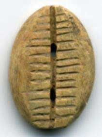
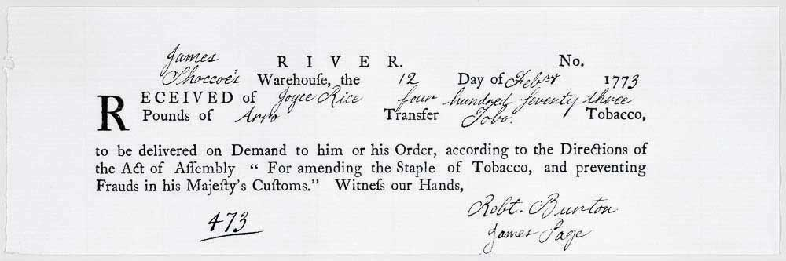

Figure 3.1 Cowrie money from early China
Much stranger commodities than cigarettes have served as money over the ages, and for the most part served well. As storied economist John Kenneth Galbraith once claimed, “More than most things, an understanding of money requires an appreciation of its history,” so a brief history lesson is in order here.www.johnkennethgalbraith.com As Figure 3.1 "Cowrie money from early China" suggests, various types of live animals, parts of dead animals, grains, metals, rocks, and shells have been money at one time and place or another. www.pbs.org/newshour/on2/money/timeline_ns4.html;www.ex.ac.uk/~RDavies/arian/amser/chrono.html
We generally find that, as with the case of prison inmates, early societies used available commodities that had the best combination of ease of authentication, uniformity, divisibility, durability, portability, and elasticity of supply. Hay (grassy livestock feed) rarely emerges as money because it is too easy to adulterate with weeds; its low value-to-bulk renders its portability very low due to the trouble and expense of transporting it; and until it is properly baled and stored, a rainstorm can ruin it. Tobacco, by contrast, has served as a commodity money because it is more uniform, durable, portable, and easily authenticated than hay. In colonial Virginia, tobacco was turned into a form of representative moneyIntrinsically valueless (or nearly so) tokens that can be exchanged for commodities at a fixed, predetermined rate. when trustworthy and knowledgeable inspectors attested to its quality, stored it in safe warehouses, and issued paper receipts for it. The receipts, shown in Figure 3.2 "Reproduction of eighteenth-century tobacco transfer note", rather than the tobacco itself, served as an extremely uniform, durable, divisible, portable, and easily authenticated medium of exchange.
Figure 3.2 Reproduction of eighteenth-century tobacco transfer note
Courtesy: The Colonial Williamsburg Foundation.
Diamonds, rubies, and other rare gems seldom become money because they are not uniform in quality and are difficult to authenticate. One needs expensive specialized training and equipment to value them properly. (See Figure 3.3 "Is it real?" for an example.) Gold, by contrast, has often served as money because, as an element (symbol = Au; atomic number = 79),www.webelements.com it is perfectly uniform in its pure form. It is also easily divisible; relatively highly portable for a commodity; and, though soft for a metal, quite durable. Gold can be adulterated by mixing it with cheaper metals. Even when coined, it can be clipped, sweated, or otherwise adulterated. Relatively easy ways of authenticating gold and other precious metals in their bullion (bar or brick) and coin forms exist, however.If you look through the Gunston Hall probate inventory database here: www.gunstonhall.org/probate/index.html, you’ll discover that a large percentage of households in Maryland and Virginia in the late eighteenth and early nineteenth centuries owned a set of money scales. People regularly weighed coins to authenticate them and determine their real value. Gold’s elasticity of supply, traditionally quite low due to its rarity, is its biggest shortcoming. Money must be scarce, meaning that free goods like air and water (where plentiful) will not work as money, but it need not be rare, and in fact, the best forms of money are not rare.
Many students have no problem seeing how commodities with use value, like food and cigarettes, or rarity value, like gold and silver, can be money. They often wonder, though, about the sanity of people who used common, useless items as money. Before congratulating themselves on their own rationality, however, they ought to peek into their wallets and purses, where they may discover, if they haven’t already used it on tuition, books, and entertainment, that they possess some greenish pieces of paper, called Federal Reserve notes, the use value of which is nearly nil.In the past, paper money that lost its value in exchange was used as wallpaper; thumb paper (to keep grimy young hands from dirtying textbooks, which in real terms were even more expensive in the distant past than at present, believe it or not); and tissue paper, for both the nose and the posterior! They were also used to tar and feather dogs and the occasional hated government official. True, those notes are fiat money. In other words, they appear to enjoy the advantage of legal tender status. The face of the notes makes clear that they are “legal tender for all debts, public and private.” That means that it is illegal to refuse them. That little note on the notes notwithstanding, it is clearDuring the American Revolution, Congress declared its paper money, Continental dollars, a legal tender. Despite the proclamation, Continentals soon lost almost all of their value, giving rise to the expression “Not worth a Continental.” Other examples of the failure of tender clauses abound. that people today accept Federal Reserve notes for the same reason that people in the past accepted clamshells, beads, or other low use-value items, because they know that they can turn around and successfully exchange them for goods. In fact, many economists define money as anything commonly accepted in exchange. (So Ron Paul dollars are not money!)www.youtube.com/watch?v=qMhz_ki_B7o